近代物理學 - 波的粒子特性 (Modern Physics - Particle Properties of Waves)#
日期: 2026.03.17
2.1 電磁波 (Electromagnetic Waves)#
電磁波是由相互耦合的振盪電場 \(\mathbf{E}\) 與磁場 \(\mathbf{B}\) 所組成，兩者在空間中相互垂直，且皆垂直於波的行進方向（波向量 \(\mathbf{k}\)，即能量傳遞方向，由坡印廷向量(Poynting vector) \(\mathbf{S} = \frac{1}{\mu_0}\mathbf{E} \times \mathbf{B}\) 決定）。電磁波在真空中以光速 \(c\) 行進。
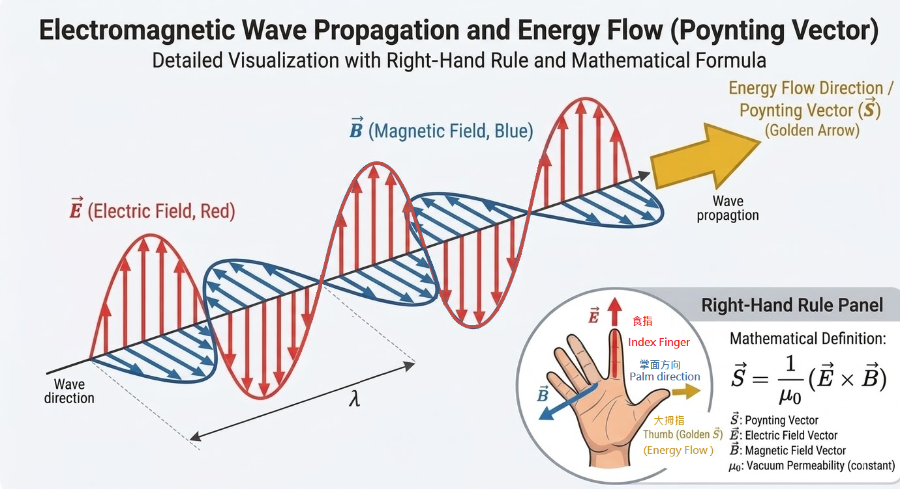
疊加原理 (Principle of Superposition)#
所有波動現象皆具有一個核心特徵：遵守疊加原理。當在同一性質的介質中，有兩列或多列波動在同一時間通過空間中的同一點時，該點的瞬間合成振幅為各別波之瞬間振幅的代數和。
在數學上，若描述波動的微分方程是線性 (linear) 的（例如真空中的馬克士威方程組），則該波動方程的任意解的線性組合仍然是該方程的解，這正是疊加原理成立的數學基礎。
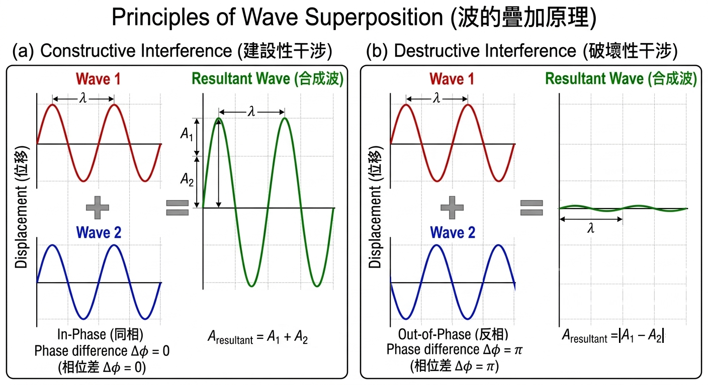
電磁輻射光譜#
電磁波依據其頻率 \(\nu\)（或真空中波長 \(\lambda = c/\nu\)）的不同，劃分為不同的區域，構成電磁光譜。光子的能量與頻率成正比（\(E=h\nu\)），這決定了不同波段電磁波與物質交互作用的特性，包含其穿透能力。一般而言，頻率越高（波長越短），單一光子的能量越高，通常具有更強的穿透力（但這亦取決於吸收介質的性質）。
無線電波 (Radio Waves)：波長極長（可達數 km），具有繞射能力強、在地球表面傳播距離遠的特性。
微波 (Microwaves)：波長介於 mm 至 m 之間，例如約 \(1 \text{ cm}\) 的微波可以穿透牆壁。
紅外線 (Infrared, IR)：波長長於可見光。高頻紅外線開始具有指向性。
可見光 (Visible Light)：人眼可感知的窄波段。
紫外線 (Ultraviolet, UV)。
X 射線 (X-rays)：具有高能量與強穿透力。
伽瑪射線 (\(\gamma\)-rays)：能量最高，穿透力最強。
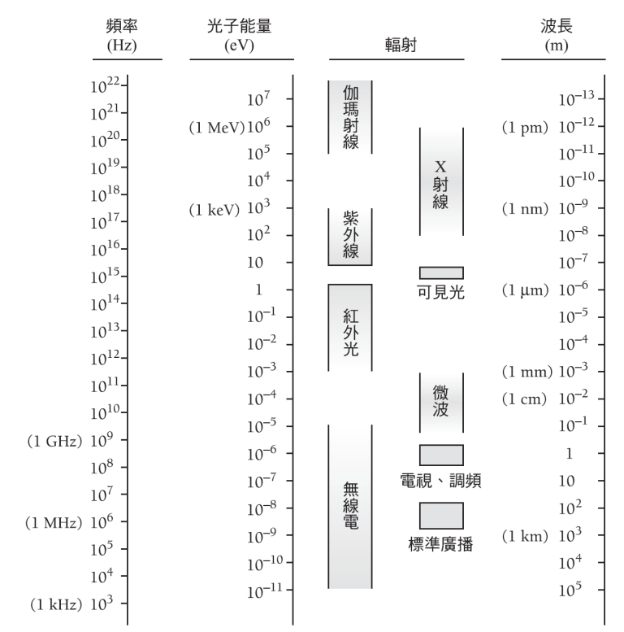
2.2 黑體輻射 (Blackbody Radiation)#
物質在任何溫度下都會發射電磁輻射，稱為熱輻射。古典物理學無法完整解釋熱輻射的光譜分布，只有光量子理論可以解釋其來源。
為研究熱輻射的規律，引入理想模型——黑體 (blackbody)。黑體是一種假設指一個可以吸收所有入射輻射能量而不論其頻率、入射方向或偏振態為何的理想物體，黑體不反射光所以在低溫時看起來是黑的，黑體也是理想的輻射體。
實驗觀測到的黑體輻射光譜具有以下特徵：
輻射的能量光譜分布僅和物體的溫度 \(T\) 有關。
斯特凡-波茲曼定律 (Stefan-Boltzmann Law)：輻射總功率（光譜曲線下的面積）與溫度的四次方成正比。
輻射通量密度 \(E\) \([\text{W}\cdot\text{m}^{-2}]\)
斯特凡-波茲曼常數 (Stefan-Boltzmann constant) \(\sigma \approx 5.67 \times 10^{-8} \) \(\text{W}\cdot\text{m}^{2}\cdot\text{K}^{4}\)
溫度 \(T\) \([\text{K}]\)
文氏位移定律 (Wien’s displacement law)：輻射強度極大值所對應的頻率 \(\nu_{\text{max}}\) 與溫度成正比，或對應的波長 \(\lambda_{\text{max}}\) 與溫度成反比。
\[\lambda_{\text{max}} T = b \approx 2.898 \times 10^{-3} \text{ m} \cdot \text{K}\]這意味著溫度越高時，輻射量越大且極大放射頻率也會越高。太陽、恆星、白熾燈泡都是近似黑體輻射的好例子。
瑞利-今斯公式 (Rayleigh-Jeans Formula) 的古典嘗試#
古典物理學嘗試利用腔體內的駐波模型與能量均分定理來推導黑體光譜。
腔體內的駐波密度 (Density of States)： 考慮一個邊長為 \(L\) 的立方體空腔，腔壁溫度為 \(T\)，腔內電磁場形成駐波。經由計算 \(k\) 空間中的模式數並考慮電磁波的兩個偏振態，可得單位體積內，頻率介於 \(\nu\) 與 \(\nu+d\nu\) 之間的駐波（模式）數為：
\[G(\nu)d\nu = \frac{8\pi\nu^2}{c^3} d\nu \]\(\nu\) (頻率) \([\text{Hz}] = [\text{s}^{-1}]\)
\(d\nu\) (頻率區間)：一個極小的頻率範圍（從 \(\nu\) 到 \(\nu + d\nu\)）\([\text{Hz}] = [\text{s}^{-1}]\)
\(c\) (光速)：真空中光速，\(2.99 \times 10^8 [\text{m} \cdot\text{s}^{-1}]\)
\(G(\nu)\) (駐波密度 / 狀態密度，Density of States)：在單位體積內、每單位頻率區間中，可以容納多少個駐波模式
\(G(\nu)d\nu\) (總駐波數密度)：代表在頻率介於 \(\nu\) 與 \(\nu + d\nu\) 之間，單位體積內共有多少個駐波模式 \([\text{m}^{-3}]\)
古典平均能量与均分定理： 根據古典統計力學的能量均分定理，在熱平衡狀態下，每一個具備兩個自由度（對應動能與位能，如簡諧振子）的系統，其平均能量為 \(\bar{\epsilon}=kT\)。 電磁駐波模式可視為具有兩個自由度的簡諧振子（對應電場能量與磁場能量），因此古典電動力學預測每個駐波模式的平均能量與頻率無關：
\[\bar{\epsilon}_{\text{classical}} = kT \]\(k\) (波茲曼常數) \( \sim 1.381 \times 10^{-23} \text{J}\cdot\text{K}^{-1}\)。
瑞利-今斯公式： 將腔體模式密度 \(G(\nu)d\nu\) 乘以古典平均能量 \(\bar{\epsilon}_{\text{classical}}\) ，得到古典理論預測的 能量密度光譜分布 \(u(\nu)d\nu\)：
\[u(\nu)d\nu = \bar{\epsilon}_{\text{classical}} G(\nu)d\nu = \frac{8\pi kT\nu^2}{c^3} d\nu\]結論： 瑞利-今斯公式在低頻區域與實驗結果吻合，但在高頻區域（\(\nu \to \infty\)），該公式預測能量密度趨於無窮大。這顯然是不物理的，此現象稱為 紫外災變 (Ultraviolet Catastrophe) ，這證明了古典物理學在解釋高頻熱輻射上的根本性失敗。
普朗克輻射公式 (Planck Radiation Formula) 與能量量子化#
1900年，普朗克 (Max Planck) 為了解決紫外災變問題，提出了一個革命性的假設：腔壁上的原子振盪器 (oscillator) 的能量不是連續的，而是量子化 (quantized) 的。
普朗克假設： 一個頻率為 \(\nu\) 的振盪器，其能量只能取特定的不連續值，這些值是某一最小能量單位的整數倍：
\[\epsilon_n = nh\nu, \quad n = 0, 1, 2, \dots\]其中 \(h\) 為普朗克常數 (Planck constant)。實驗測定值為：
\[h = 6.626 \times 10^{-34} \text{ J} \cdot \text{s}\]量子化振盪器的平均能量： 根據量子化假設，振盪器處於能量狀態 \(\epsilon_n\) 的機率服從波茲曼分布： \(P(n) \propto e^{-\epsilon_n/kT} = e^{-nh\nu/kT}\) ，單個振盪器的 實際平均能量 \(\bar{\epsilon}\) ，利用幾何級數求和公式及其導數：
\[\begin{split}\begin{gather*} \bar{\epsilon} &=& \frac{\sum_{n=0}^{\infty} \epsilon_n e^{-\epsilon_n/kT}}{\sum_{n=0}^{\infty} e^{-\epsilon_n/kT}} \\ &=& \frac{\sum_{n=0}^{\infty} nh\nu e^{-nh\nu/kT}}{\sum_{n=0}^{\infty} e^{-nh\nu/kT}} \\ &=& \bar{\epsilon} = \frac{h\nu}{e^{h\nu/kT} - 1} \end{gather*}\end{split}\]物理解釋： 在量子假設下，駐波（振盪器）的平均能量不再是恆定的 \(kT\)，而是與頻率 \(\nu\) 有關。在高頻區域 (\(h\nu \gg kT\))，激發高能量子態的機率極低，導致平均能量趨近於零，從而壓抑了高頻輻射。
普朗克輻射公式： 將腔體模式密度 \(G(\nu)d\nu\) 乘以量子化平均能量 \(\bar{\epsilon}\)，得到普朗克輻射公式：
\[\begin{split}\begin{gather*} u(\nu) d\nu &=& \bar{\epsilon} G(\nu)d\nu \\ &=&\frac{8\pi h\nu^3}{c^3} \frac{1}{e^{h\nu/kT} - 1} d\nu \end{gather*}\end{split}\]或者也可以寫成 \(u(\lambda)d\lambda\) 的形式，普朗克公式與所有波段的黑體輻射實驗數據完全吻合，成功解決了紫外災變問題。
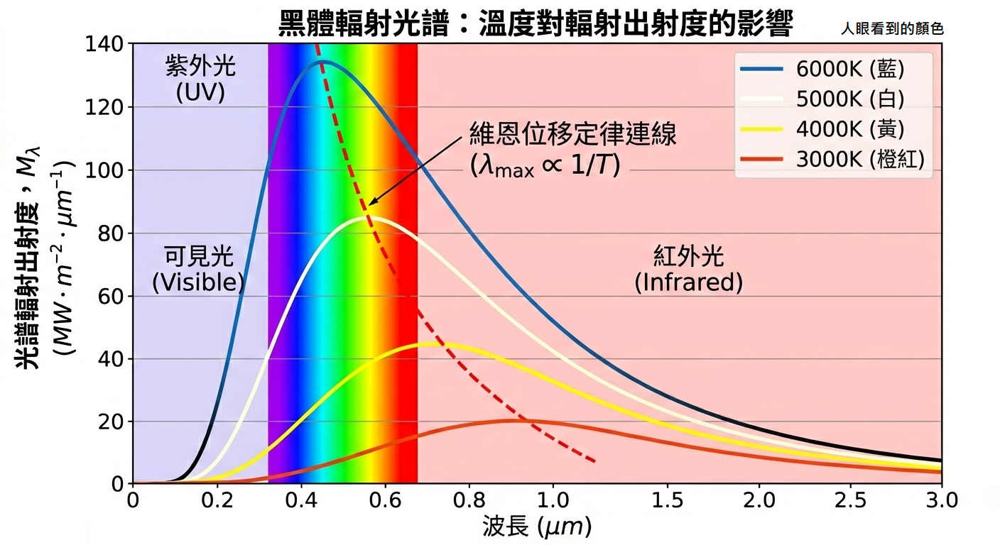
範例：能量量子化的觀測尺度#
比較頻率 660 Hz、振動能量 0.04 J 的音叉，與吸收頻率 \(5 \times 10^{14} \text{ Hz}\)（橘色光）的原子振盪器，原子物理常用單位電子伏特 (eV)之間的能量量子。
(a) 對音叉而言 (低頻率、宏觀系統)： 單個能量量子為：
音叉的宏觀總能量 \(0.04 \text{ J}\) 是其能量量子 \(h\nu\) 的 \(10^{29}\) 倍。由於能量量子 \(h\nu\) 相對於總能量極小，我們無法觀測到能量的不連續性。因此，音叉的行為完全可以用古典物理（連續能量）精確描述。
(b) 對於原子振盪器而言 (高頻率、微觀系統)： 單個能量量子為：
\(2.08 \text{ eV}\) 在原子尺度中是一個巨大的能量（例如，原子的束縛能通常在幾 eV 數量級）。在這種微觀尺度下，能量的量子化效應非常顯著，古典力學預測的連續能量變化無法解釋原子系統的激發與輻射現象（如特定的光譜線），必須使用量子力學。
2.3 光電效應 (Photoelectric Effect)#
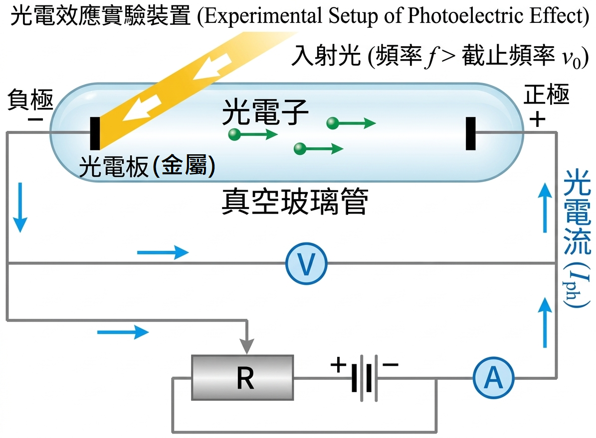
光電效應是指當光照射在金屬表面時，金屬表面會放出電子的現象，被放出的電子稱為光電子 (photoelectron)，實驗發現：
截止頻率：對於每種金屬，存在一個最小頻率 \(\nu_0\)，若入射光頻率 \(\nu < \nu_0\)，不論光強多大，都不會產生光電子。
瞬間發射：只要光頻率 \(\nu > \nu_0\)，光電子幾乎立刻（\(< 10^{-9} \text{ s}\)）發射。
光電子最大動能：光電子的極大動能 \(K_{\text{max}}\) 與入射光頻率 \(\nu\) 呈線性關係，而與光強無關。
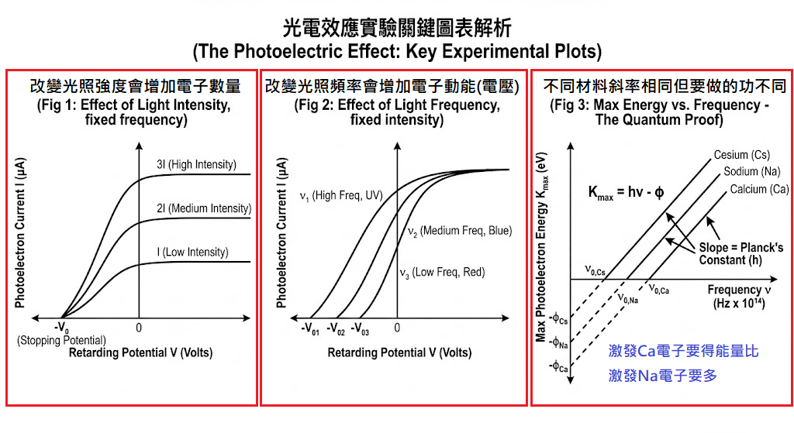
愛因斯坦的光子假說 (Einstein’s Photon Hypothesis)#
1905年，愛因斯坦延伸了普朗克的量子化概念，提出光本身在空間中的傳播也是量子化的，是一個個集中的能量包，稱為光子 (Photon)。
單一光子能量：\(E = h\nu\)。
功函數 (Work Function)：將一個電子從金屬表面束縛中游離出來所需的最小能量，記為 \(\phi\)（亦稱為束縛能或離子化能量 IE）。此最小能量對應截止頻率 \(\nu_0\)：\(\phi = h\nu_0\)。
解釋光電效應 (能量守恆方程式)#
根據光子假說，光與電子的交互作用是單一光子與單一電子的「一對一」碰撞過程，一顆電子只能「一次吞下一整顆」光子並吸收其全部能量 \(h\nu\)。 電子吸收能量後，一部分能量用來克服金屬表面的束縛能（功函數 \(\phi\)），剩餘的能量轉換為電子飛出金屬表面後的最大動能 \(K_{\text{max}}\)，根據能量守恆定律：
這組方程完美解釋了實驗觀測：只有當 \(h\nu > \phi\)（即 \(\nu > \nu_0\)）電子才有足夠能量逃脫，且最大動能隨頻率線性增加，與光強（光子數量）無關。
光子能量的表述法#
在原子尺度計算中，使用標準單位制 (SI) 常會導致極小的值。利用 \(hc \approx 1240 \text{ eV} \cdot \text{nm}\) 可以方便計算。
光子能量常表示為：
功函數參考表
金屬 |
符號 |
功函數 \(\phi\) (eV) |
|---|---|---|
銫 |
Cs |
1.9 |
鉀 |
K |
2.2 |
鈉 |
Na |
2.3 |
鋰 |
Li |
2.5 |
鈣 |
Ca |
2.9 |
銅 |
Cu |
4.7 |
鉑 |
Pt |
5.6 |
範例：光電效應計算#
波長 350 \(\text{nm}\) 和強度 \(1.00 \text{ W/m}^2\) 的紫外光照射於鉀 (K) 原子表面 (\(\phi = 2.2 \text{ eV}\))，鉀原子表面積為 \(1.00 \text{ cm}^2\)。假設 \(0.50\%\) 的入射光子產生光電子。
(a) 求出光電子的極大動能 \(K_{\text{max}}\)。
入射光子能量 \(E_p\)：
光電子極大動能：
(b) 每秒有多少光電子產生？ 照射在金屬表面上的總功率 \(P\) 為：
單個光子能量（焦耳）：
每秒入射光子數 \(N_p\)：
每秒產生的光電子數 \(N_e\)：
熱離子放射 (Thermionic Emission)#
除了吸收光子，給予物質熱能也可以做功讓電子脫離束縛，當物體溫度足夠高時物體表面會放出電子，這個現象稱為 熱離子放射 ，功函數 \(\phi\) 決定了在給定溫度下發射電子的難易程度。
問題研討：光與熱的結合#
問題： 是否可以用低頻率的光（\(\nu < \nu_0\)）加上熱能來釋放出電子？例如，增加光強或增加溫度是否能改變上述實驗結果？
分析： 這個問題的關鍵在於區分「光電效應」與「熱離子放射」，並理解統計分布。
熱能的作用：熱能會使金屬內電子的動能符合費米-狄拉克分布 (Fermi-Dirac distribution)。隨著溫度增加，雖然大多數電子仍被束縛，但處於較高能階（接近真空能階）的電子數量會增加。這意味著，溫度較高時，某些電子只需要較少的額外能量就能逃逸。
光的結合：
增加低頻光（\(\nu < \nu_0\)）強度：在古典極限下，單一光子能量 \(h\nu\) 不足以打出電子，增加強度只是增加低能量光子的數量，單純增加光強並不會導致光電子的釋放。
溫度加上低頻光：如果金屬溫度足夠高產生顯著的熱離子放射，此時若照射 \(\nu < \nu_0\) 的光，光子仍會被電子吸收。雖然單個光子的能量不足以讓 \(0 \text{ K}\) 時的費米面電子逃逸，但它可以給予那些 已經因熱被激發到較高能態 的電子足夠的剩餘能量來逃脫金屬表面。因此，在高溫下，頻率低於「標準cutoff」的光子確實可以對電子發射率做出貢獻，這可以看作是有效功函數隨溫度改變（下降）的結果。
結論： 熱能並非「增加電子的動能，讓它更容易被光子打出來」，精確地說，熱能是預先激發了電子，使其處於能量較高的狀態。雖然單個低頻光子仍無法打出大多數電子，但在高溫統計分布下，它確實可以幫助那些已被熱激發的「幸運」電子逃逸。因此，增加溫度可以使較少頻率的光子就能打出電子。
2.4 X射線 (X-Rays)#
1895年，崙琴 (Wilhelm Roentgen) 發現當快速電子撞擊物質（鎢靶）時，會產生一種未知性質、高穿透力的輻射，稱為 X 射線。
X 射線的產生是光電效應的逆過程：光電效應是光子能量轉換成電子動能；X 射線產生是電子動能轉換成光子能量。
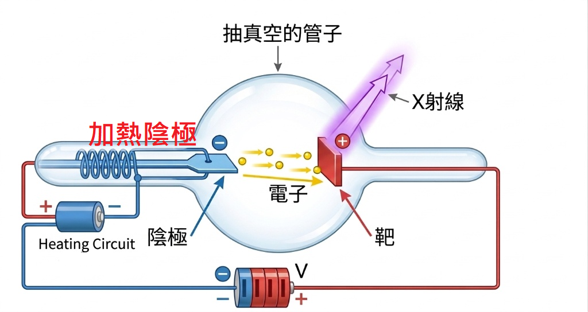
X射線 tube 與光譜#
在 X 射線管中，電子在電位差 \(V\) 下被加速，獲得動能 \(K = eV\)。當電子撞擊靶材時，會因突然減速而輻射能量（稱為刹車輻射 Bremsstrahlung）。若電子一次撞擊就將所有動能轉換為單一光子能量，則產生具有最短波長 \(\lambda_{\text{min}}\)（最高頻率）的光子，對應能量上限：
因此，產生 X 射線的最短波長為：
實驗觀察到的 X 射線光譜（如金屬鉬 Mo 在 35kV 電位下）包含連續光譜與特徵峰（如 \(K_{\alpha}\) 和 \(K_{\beta}\) 線）。特徵峰對應於高速電子將靶材原子的內層電子打出，導致外層電子躍遷回內層所釋放的特定能量光子，這些特徵峰的存在證明了原子具有量子化的內部能階結構。
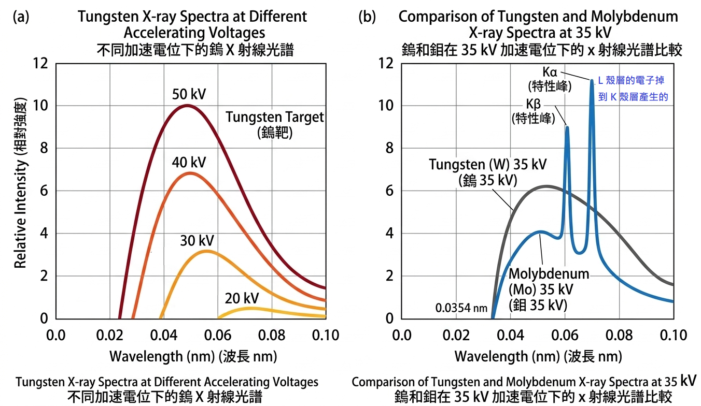
穿透力與應用#
X 射線的穿透力與光子能量成正比（頻率成正比，波長成反比），加速電壓 \(V\) 越高，X 射線能量越大，穿透力也越強。
X 射線在醫學診斷上的應用利用了不同組織對能量吸收的差異，骨頭含有鈣，相較於肌肉和脂肪，對 X 射線較不透明。電腦斷層掃描 (Computerized Tomography, CT) 則是從不同方向對病人照射一連串 X 射線，利用電腦組成身體截面影像，提供了較普通 X 射線圖（2D投射）更為精確的組織狀況與位置資訊。
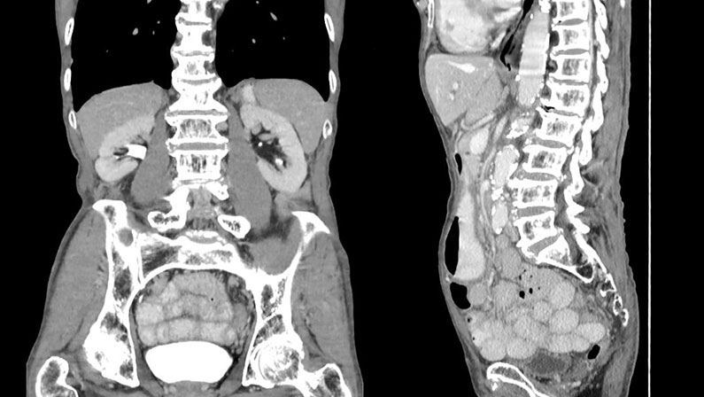
範例：X射線波長計算#
以 100 kV 電壓加速電子撞擊鎢靶。
(a) 求出產生的 X 射線的最短波長 \(\lambda_{\text{min}}\)。
(b) 求此波長對應到的頻率 \(\nu\)。
2.5 X射線的繞射 (Diffraction of X-Rays)#
重要概念：電磁波要與物質發生顯著的交互作用（如繞射），兩者的特徵尺度（電磁波波長與物體特徵直徑）必須相當。
X 射線的波長（數量級為 \(10^{-10} \text{ m}\)，即 \(0.1 \text{ nm}\) ）與晶體中原子間的距離相當。因此，晶體可以充當 X 射線的天然繞射光柵，當 X 射線照射到晶體上時會發生繞射現象，形成特定的繞射圖樣（Lau圖），分析這些圖樣可以揭示晶體內部的原子排列和結構。
布拉格定律 (Bragg’s Law)#
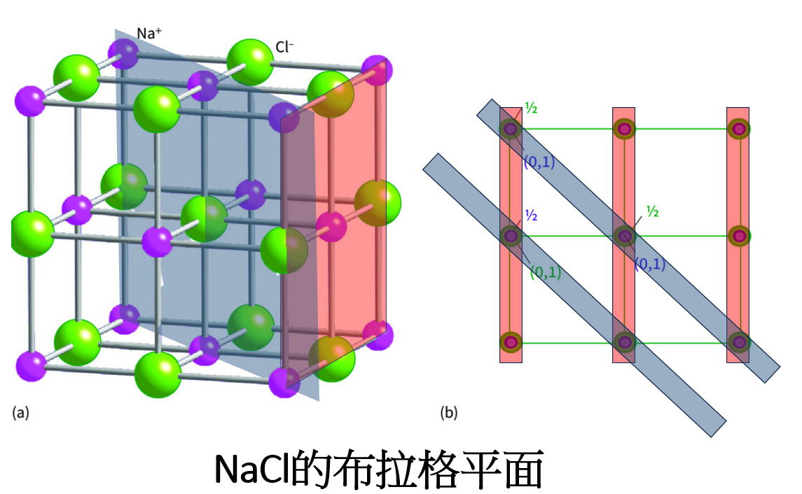
晶體中的原子可被定義為許多平行平面族，稱為布拉格平面 (Bragg plane)，相鄰平面族之間具有特定的間隔 \(d\) 。1913 年由布拉格 (W.H. Bragg 與 W.L. Bragg 父子) 提出分析：若要發生相長干涉（形成繞射峰），來自相鄰平面的反射光程差必須是波長的整數倍。
\(d\) 是布拉格平面之間的距離
\(\theta\) 是入射 X 射線與布拉格平面之間的夾角 （注意：非與平面法線夾角）
\(n\) 是繞射的階數
\(\lambda\) 是 X 射線的波長

X 射線光譜儀便是利用已知晶體結構的布拉格平面來測量未知 X 射線的波長。X 射線先通過準直儀 (collimator) 確保平行，照射到晶體上，探測器在特定布拉格角度 \(\theta\) 下接收繞射後的 X 射線，從而分析光譜。
2.6 康普頓效應 (Compton Effect)#
當高能 X 射線光子與物質交互作用時，除了在晶格上的繞射（彈性散射，波長不變）之外，還會發生一種光子與「外層自由」電子之間的散射現象，稱為康普頓散射。實驗發現，散射後的光子波長 \(\lambda'\) 大於入射光子的波長 \(\lambda\)。
這個效應 重點： 在於其無法用波動說解釋，而必須視為光子與電子發生滿足牛頓力學的粒子間碰撞過程，碰撞過程中滿足動量守恆和能量守恆。光子將部分能量轉移給電子，導致光子能量減少（頻率降低，波長增加），電子獲得動能（稱為反彈電子），此效應有力地證明了光子具有粒子性質。
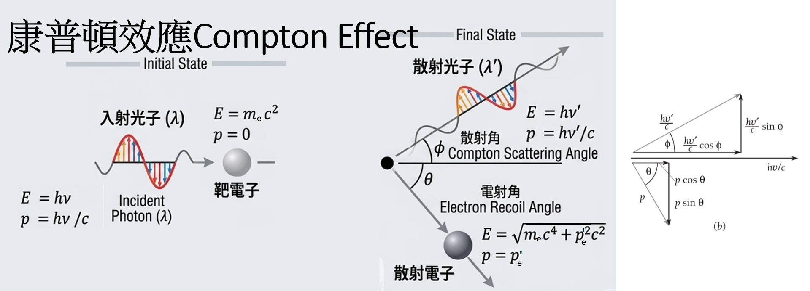
康普頓散射公式推導 (能量與動量守恆)#
考慮靜止質量為 \(m_e\) 的靜止電子與能量為 \(E=h\nu\)、動量為 \(p=\frac{h\nu}{c}\) 的入射光子碰撞。碰撞後，光子以 \(\phi\) 角散射，能量變為 \(E'=h\nu'\)、動量為 \(p'=\frac{h\nu'}{c}\)；電子以 \(\theta\) 角反彈，動量為 \(p_e\)。
利用相對論能量與動量關係式：
動量守恆（向量式）：\(\mathbf{p}_{\text{light}} + \mathbf{p}_{\text{electronic}}= \mathbf{p'}_{\text{light}} + \mathbf{p'}_{\text{electronic}}\) 這可以分解為 X 軸（入射方向）與 Y 軸（垂直入射方向）分量。
能量守恆：
假設與已知#
【已知 1】動量守恆:
\[\begin{split}\begin{gather*} \text{X方向：}&\frac{h\nu}{c} + 0 &=& \frac{h\nu'}{c}\cos \phi + p_e' \cos \theta \\ \text{Y方向：}&0+0 &=& \frac{h\nu'}{c}\sin \phi - p_e' \sin \theta \end{gather*}\end{split}\]【已知 2】能量守恆:
\[h\nu + m_e c^2 = h\nu' + \sqrt{{p_e'}^2 c^2 + m_e^2 c^4}\]【已知 3】電子動能:
\[\begin{split}\begin{gather*} h\nu + m_e c^2 &\overset{\text{已知 2}}=& h\nu' + \sqrt{{p_e'}^2 c^2 + m_e^2 c^4}\\ \sqrt{{p_e'}^2 c^2 + m_e^2 c^4} &=& h\nu - h\nu' + m_e c^2 \\ {p_e'}^2 c^2 + m_e^2 c^4 c [h(\nu - \nu') + m_e c^2]^2\\ {p_e'}^2 c^2 + m_e^2 c^4 &=& h^2(\nu - \nu')^2 + 2h(\nu - \nu')m_e c^2 + m_e^2 c^4\\ {p_e'}^2 c^2 &=& h^2(\nu^2 - 2\nu\nu' + \nu'^2) + 2h(\nu - \nu')m_e c^2 \end{gather*}\end{split}\]【已知 4】消除電子的反彈角度 \(\theta\):
\[\begin{split}\begin{gather*} \text{X方向}^2 + \text{Y方向}^2 \Rightarrow &({p_e'}^2 \cos^2 \theta) + ({p_e'}^2 \sin^2 \theta) &=& \left( \frac{h\nu}{c} - \frac{h\nu'}{c}\cos \phi \right)^2 + \left( \frac{h\nu'}{c}\sin \phi \right)^2\\ &{p_e'}^2 &=& \left( \frac{h\nu}{c} - \frac{h\nu'}{c}\cos \phi \right)^2 + \left( \frac{h\nu'}{c}\sin \phi \right)^2\\ &{p_e'}^2 c^2 &=& (h\nu - h\nu'\cos \phi)^2 + (h\nu'\sin \phi)^2\\ &{p_e'}^2 c^2 &=& (h^2\nu^2 - 2h^2\nu\nu'\cos \phi + h^2\nu'^2\cos^2 \phi) + h^2\nu'^2\sin^2 \phi\\ &{p_e'}^2 c^2 &=& h^2\nu^2 - 2h^2\nu\nu'\cos \phi + h^2\nu'^2 \end{gather*}\end{split}\]
proof#
最後得出康普頓散射公式，描述散射光子波長變化量 \(\Delta\lambda\) 與散射角度 \(\phi\) 的關係：
此公式的物理意義如下：
光子波長的增加量 \(\Delta\lambda = \lambda' - \lambda\) 僅與散射角 \(\phi\) 有關，而與入射波長 \(\lambda\) 無關。
定義常數康普頓波長 \(\lambda_c = \frac{h}{m_e c} \approx 2.426 \text{ pm}\)。
波長變化量在散射角度 \(\phi = 180^\circ\)（後向散射）時達到最大值，最大值為 \(2\lambda_c\)。
康普頓散射的實驗確認（不同散射角度下散射光強與波長的關係）完全符合式，強烈支持了光子的粒子模型。
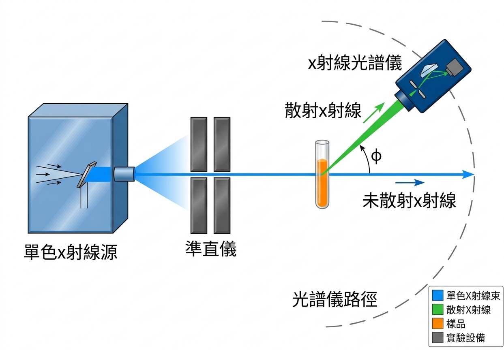
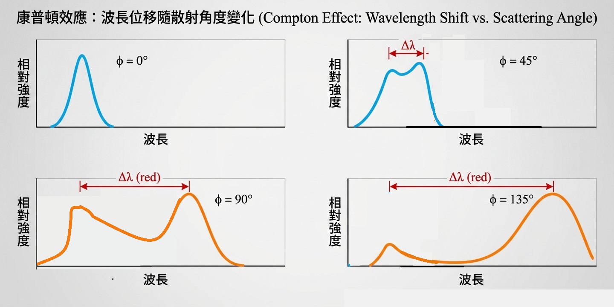
問題研討：康普頓效應中的能量與動量守恆#
問題一： 能量是否守恆？ 答案： 是肯定的。光子損失的能量 \(h\nu - h\nu'\) 完全等於電子獲得的相對論動能。這完全符合能量守恆定律。
問題二： 是光子決定電子的散射角度 \(\theta\)，還是電子決定光子的散射角度 \(\phi\)？散射角的分布如何決定？ 答案： 根據動量守恆 \(\mathbf{p} = \mathbf{p'} + \mathbf{p_e}\)，光子散射角度 \(\phi\)、光子能量變化 \(\Delta\nu\) 以及電子散射角度 \(\theta\) 是相互耦合、同時決定的。一旦其中一個量（如光子散射角 \(\phi\)）被確定，其他量（電子的動能與角度 \(\theta\)）也就根據守恆定律唯一確定了。 至於實驗觀察到特定散射角度 \(\phi\) 的機率分布（微分截面），是由量子電動力學 (QED) 中的克萊因-仁科公式 (Klein-Nishina formula) 決定的。這屬於量子力學的範疇，涉及到粒子行為的隨機性，通常不與特定電子的初始狀態（如果視為自由靜止電子）一一對應。然而，如果電子處於原子結合態，電子的初始動量分布確實會影響散射光譜的形狀（導致「康普頓輪廓」多普勒增寬）。
2.7 配對產生 (Pair Production)#
光子與物質交互作用除了光電效應和康普頓效應外，還可能發生一種將光子能量直接轉化為質量的過程：一個高能光子可能消失，並產生一個電子和一個正子（positron，電子的反粒子，帶正電）。這個過程稱為配對產生。
此過程必須遵守：
能量守恆：光子的能量 \(h\nu\) 必須大於產生的電子-正子對的靜止能量加上其動能。
動量守恆：光子的動量必須等於產生粒子的總動量加上任何參與交互作用物體的動量。
重要性質：配對產生不會在「空無一物的空間」中發生。 它必須發生在重核附近，由核吸收反彈動量以滿足動量守恆。
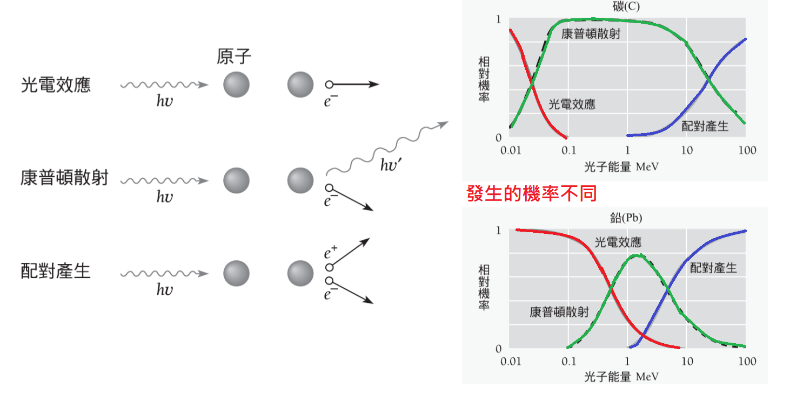
證明：配對產生不會在空空間中發生 考慮在空空間中，光子產生電子-正子對。設電子和正子具有相同的動能（且根據動量守恆在橫切方向上對稱，夾角為 \(\theta\)）。
能量守恆：\(h\nu = 2 \gamma m_e c^2\)（其中 \(\gamma = \frac{1}{\sqrt{1-v^2/c^2}}\)）
光子行進方向的動量守恆：\(\frac{h\nu}{c} = 2 p_e \cos \theta = 2 (\gamma m_e v) \cos \theta\)
由於實粒子的速度 \(v < c\)，故 \(\frac{v}{c} < 1 , \cos \theta \le 1\) ，上式不可能成立。因此，此過程在空空間中無法同時滿足能量與動量守恆，需要有核來借走額外的動量（核的動量變多，借走的動量最後藉由核的運動表現，核吸收的能量相對極小，能量仍主要由光子提供）。
配對產生的閾值能量與正子滅絕#
配對產生所需的 最小能量（閾值能量） 為兩倍的電子靜止能量：
多餘的光子能量轉換為粒子對的動能。 逆過程為正子滅絕 (Positron Annihilation)：正子遇上電子時，兩者會結合成束縛態（正子素），最後滅絕並轉化為至少兩個光子，產生兩個光子是為了同時滿足能量與動量守恆。
範例：正子滅絕計算#
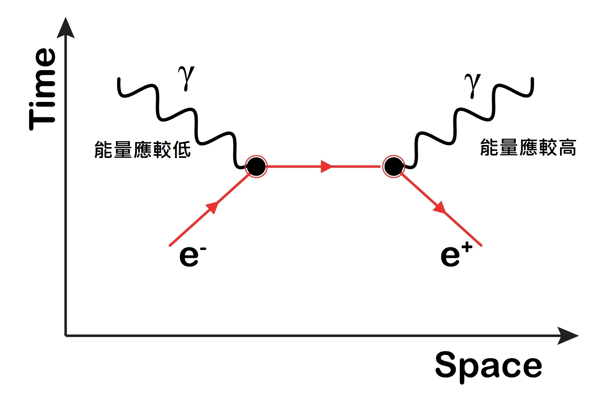
一個電子和一個正子在 +x 方向上並排以速度 \(0.500c\) 運動時滅絕，沿著 x 軸產生兩個光子（\(\nu_1\) 和 \(\nu_2\)）。
(a) 兩個光子都是沿著 +x 方向嗎？
答案： 不會。如果兩個光子都沿著 +x 方向，雖然可以滿足能量守恆，但無法滿足原始系統沿 x 軸的正動量。兩個光子必須一個向前方（+x），一個向後方（-x）射出。
(b) 每個光子的能量為何？ 利用相對論因子 \(\gamma = 1/\sqrt{1-(0.5)^2} = 1.1547\)。
初始總能量 \(E_{\text{tot}} = 2 \gamma m_e c^2 = 2 \times 1.1547 \times 0.511 \text{ MeV} \approx 1.180 \text{ MeV}\)。
初始總動量 \(p_{\text{tot}} = 2 \gamma m_e v = 2 \times 1.1547 \times 0.511 \text{ MeV}/c^2 \times 0.5c = 0.590 \text{ MeV}/c\)。 設向前光子能量 \(E_1\)，向後光子能量 \(E_2\)。
能量守恆：\(E_1 + E_2 = E_{\text{tot}} = 1.180\)
動量守恆：\(\frac{E_1}{c} - \frac{E_2}{c} = p_{\text{tot}} = 0.590\)
解聯立方程：
光子吸收與衰減 (Photon Absorption and Attenuation)#
光子、X 射線和伽瑪射線在穿過物質時，主要通過光電效應、康普頓散射和配對產生這三種方式被吸收或散射（能量轉換至電子，電子再損失能量給材料）。三者發生的相對機率與光子能量及物質的原子序 \(Z\) 有關。
光電效應：在低能量段（對於鉛原子，小於 \(0.5 \text{ MeV}\)；對於碳原子，能量極低時）最顯著。機率隨 \(Z\) 增加急劇增加（\(\propto Z^4 \sim Z^5\)）。
康普頓散射：在中等能量段是主要的交互作用機制。在輕元素（如碳）中更為占主導。
配對產生：在高能量段（\(>\) 閾值 \(1.022 \text{ MeV}\)）成為主導。機率隨 \(Z\) 增加而增加（\(\propto Z^2\)）。
\(I\) 強度 \([\text{W} \cdot \text{m}^{-2}]\)
\(\mu\) 為線性衰減係數 (attenuation coefficient) \([ \text{m}^{-1}]\)
\(x\) 厚度 \([ \text{m}]\)
光束穿過厚度為 \(dx\) 的吸收材料時，強度 \(I\) 的減少量 \(dI\) 與強度、厚度呈正比：
範例：伽瑪射線衰減計算#
在水中 \(2.0 \text{ MeV}\) 伽瑪射線的線性衰減係數為 \(4.9 \text{ m}^{-1}\)，\(x = 0.1 \text{ m}\)，\(\mu x = 4.9 \times 0.1 = 0.49\)。
(a) 射線通過 \(10 \text{ cm}\) 的水之後，相對強度 \(I/I_0\) 為何？
強度剩下原來的 \(61\%\)。
(b) 當強度減少為原先値的百分之一時，此光線在水中走了多遠？
2.8 光子與重力 (Photons and Gravity)#
雖然光子的靜止質量為零，但光子具有能量（\(E=h\nu\)）與動量（\(p=E/c\)）。根據愛因斯坦的廣義相對論與等效原理，所有能量形式都受到重力場的影響。光子在重力場中降落時會如同石頭一樣獲得能量，這表現為頻率由 \(\nu\) 增加至 \(\nu'\)（藍移）；反之，光子離開重力場時會損失能量，表現為頻率減少（紅移）。
引力紅位移 (Gravitational Red Shift)#
考慮光子從質量為 \(M\)、半徑為 \(R\) 的天體表面（如恆星）向上發射到無窮遠處，光子的頻率將從 \(\nu\) 減少至 \(\nu'\) ，利用重力位能與能量守恆，其頻率變化率為：
這在白矮星光譜中得到了觀察確認。1960年時，龐德 (Pound) 和瑞布卡 (Rebka) 在哈佛大學利用 H=22.5 m 的塔成功測量了地球重力場導致的光子頻率藍移，實驗精度非常高。
黑洞 (Black Hole)#
當天體極度緻密，使得光子無法克服其重力而逃逸時，該天體稱為黑洞。發生此現象的臨界半徑稱為史瓦茲希德半徑 (Schwarzschild radius) \(R_s\)：
（係數 2 來自廣義相對論的精確修正，非古典推導所得）。
範例：地球重力藍移計算#
計算 1960 年龐德與瑞布卡實驗中，下降高度 H 為 22.5 m 的紅光子（頻率 \(7.3 \times 10^{14} \text{ Hz}\)），從下降之後的頻率變化。 地表重力加速度 \(g \approx 9.8 \text{ m/s}^2\)。光子下降高度 H 後獲得能量，頻率變為 \(\nu'\)：
頻率增加了 \(1.79 \text{ Hz}\)。這是一個極小的變化，顯示了實驗技術的驚人精確度。